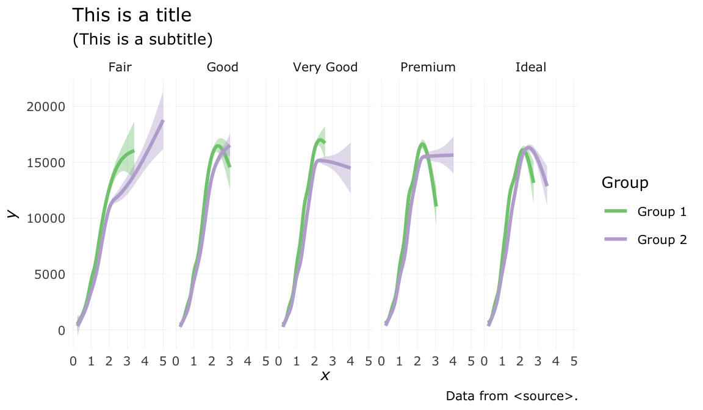

I provide code snippets for a variety of text environments and formats that can be created with R Markdown and the Bookdown package. I focus on the elements most useful for writing math.
Reference
Author
Matthew Bain
Published
March 22, 2024
Combining R Markdown with typesetting functionality from the Bookdown package and Distill web publishing format provides a comprehensive set of tools for composing web documents. In this high-level reference I cover the tools that I find most useful for writing organized, easily referenced, math-heavy documents. The examples are arbitrary, only meant to illustrate the syntax. The LaTeX and markdown syntax are not explained. For each example I provide the raw text followed by the rendered output.
1 Definition, theorem, proof
The familiar math textbook refrain. Here’s the Bookdown syntax for definition, theorem, and proof environments, respectively.
Definition
::: {#def-disjoint-sets}## Disjoint setsTwo sets $A_1$ and $A_2$ are *disjoint* if their intersection$A_1 \cap A_2 = \emptyset$, where $\emptyset$ is the empty set. We saythat $n$ sets $A_1, A_2, ..., A_n$ are disjoint if$A_i \cap A_j = \emptyset$ for $i! = j$.:::
Definition 1 (Disjoint sets) Two sets \(A_1\) and \(A_2\) are disjoint if their intersection \(A_1 \cap A_2 = \emptyset\), where \(\emptyset\) is the empty set. We say that \(n\) sets \(A_1, A_2, ..., A_n\) are disjoint if \(A_i \cap A_j = \emptyset\) for \(i! = j\).
Theorem
::: {#thm-pyth}## Pythagorean theoremGiven a right triangle, if $c$ denotes the length of the hypotenuse and$a$ and $b$ the lengths of the other two sides, then$$a^2 + b^2 = c^2.$$:::
Theorem 1 (Pythagorean theorem) Given a right triangle, if \(c\) denotes the length of the hypotenuse and \(a\) and \(b\) the lengths of the other two sides, then \[a^2 + b^2 = c^2.\]
The nice thing about Bookdown is that it will automatically number definitions and theorems so that you can easily cross-reference them later on (see the Cross-references section below). Just replace the name following the # (pyth-thm in the example below) with a unique label (containing no spaces) that will be convenient to reference.
::: {#def-cont-map}## Continuous mapA continuous map is a continuous function between two topologicalspaces.:::
Definition 2 (Continuous map) A continuous map is a continuous function between two topological spaces.
2 Assorted math examples
Here is an assortment of LaTeX examples along with their output.
Unlike in pure LaTeX, in bookdown we must manually assign labels to every line that should have a number. I do so for significant passages, steps, and equations. Here is an example of a numbered equation:
Here is an example from the Bookdown documentation. It illustrates how to display a block of math with multiple lines that share a single number and label. We use the LaTeX split environment to split the number across lines and wrap it all in double dollar signs to tell R to treat it as math rather than raw text. To give the block a number we add an (\#eq:<equation-label>) after closing the split environment with \end{split}. Just replace the text after the \#eq: prefix with a memorable label of your choice.
Each aligned expression begins with the & operator.
Numbered lines and inline notes
We can number lines individually by using the LaTeX align environment and adding a unique (\#eq:<equation-label>) at the end of every line that should have a number. Additionally, we can add in-line comments by placing && followed by (<my LaTeX-formatted comment>) at the end of the line, before the number label. As with our use of the & operator to align successive lines of math, the && operator tells the LaTeX compiler to align comments, but to do so to the right of the aligned math.
$$\begin{align}\sum_{i=1}^{n} \left( X_i - \overline{X} \right ) & = \sum_{i=1}^{n}X_i - \sum_{i=1}^{n} \overline{X} &&& \scriptstyle{\text{ (comment 1) }} \tag{a}\\ & = \sum_{i=1}^{n} X_i - n \overline{X} &&& \scriptstyle{\left(\begin{array}{c}\text{comment 2 has symbols: }\int_{a}^{b} 4 \pi r^2 \\\text{... and carries over to a second line. }\end{array}\right)}\\ & = \sum_{i=1}^{n}X_i - \sum_{i=1}^{n}X_i \\ & = 0 \tag{b}\end{align}$$ {#eq-var}
\[
\begin{align}
\sum_{i=1}^{n} \left( X_i - \overline{X} \right )
& = \sum_{i=1}^{n}X_i - \sum_{i=1}^{n} \overline{X}
&&& \scriptstyle{\text{
(comment 1)
}} \tag{a}
\\
& = \sum_{i=1}^{n} X_i - n \overline{X}
&&& \scriptstyle{\left(\begin{array}{c}
\text{comment 2 has symbols: } \int_{a}^{b} 4 \pi r^2 \\
\text{... and carries over to a second line.
}\end{array}\right)}
\\
& = \sum_{i=1}^{n}X_i - \sum_{i=1}^{n}X_i
\\
& = 0 \tag{b}
\end{align}
\tag{3}\]
5 Code blocks
We can include some nicely formatted Python code:
# Display the Fibonacci sequencenterms =5n1, n2 =0, 1count =0if nterms <=0:print("Please enter a positive integer")elif nterms ==1:print("Fibonacci sequence up to", nterms, ":")print(n1)else:print("Fibonacci sequence:")while count < nterms:print(n1) nth = n1 + n2 n1 = n2 n2 = nth count +=1
Fibonacci sequence:
0
1
1
2
3
6 Figures, tables, images
Figures
We can also execute the code within R Markdown and display the output. Here’s an example using ggplot2 that also illustrates how to display a numbered figure with a caption:
library(ggplot2)diamonds$color_group <-factor(ifelse( diamonds$color %in%c("D", "E", "F"),"Group 1", "Group 2"))ggplot( diamonds,aes(x = carat, y = price, color = color_group, fill = color_group)) +geom_smooth() +facet_grid(~ cut) +theme_minimal(base_family ="Verdana", base_size =9.5) +# Gridtheme(panel.grid.major.y =element_line(size = .1),panel.grid.minor.y =element_blank(),panel.grid.major.x =element_line(size = .1),panel.grid.minor.x =element_blank()) +# Coloursscale_color_brewer(type ="qual", palette ="Accent") +scale_fill_brewer(type ="qual", palette ="Accent") +# Labelslabs(title ="This is a title",subtitle ="(This is a subtitle)",caption ="Data from <source>.",x =expression(italic(x)),y =expression(italic(y)),colour ="Group" ) +# Legendguides(fill ="none") +guides(color =guide_legend(override.aes =list(fill ="white")))

Figure 1: This is a figure caption.
A couple notes:
To cross-reference a figure, image, or table rendered with R code, give the chunk a unique label in its knitr header following the r prefix.
To give your figure a caption with a numbered prefix as shown in this example, add fig.cap=“<Your figure caption.>” to the knitr header, replacing the string inside the quotation marks.
Here’s a more involved example that uses some more fine-tuning to achieve desired aesthetics. In the first cell we define the data. I include this example because 1) I like this plot, and 2) I think it is a good example of how to manually enter data points into a structure that ggplot can work with and then to use that structure to produce a meaningful plot.
Note: The section 1 header is followed by the label {#math-elements}.
8 References
In-text citations
Provided you have stored the sources you wish to formally cite in a bibtex document, you can cite them in-text as follows and they will automatically appear, with proper formatting, in the ‘References’ section at the bottom of your document:
This is the bibtex entry in my .bib file to which this example refers:
@book{james2013introduction, title={An introduction to statistical learning}, author={James, Gareth and Witten, Daniela and Hastie, Trevor and Tibshirani, Robert}, volume={112}, year={2013}, publisher={Springer}}
At the bottom of my document I have a corresponding footnote entry that looks like:
[^1]: Axler, S. (1997). *Linear algebra done right*.Springer Science & Business Media.
9 Asides
I have been using these throughout. Here’s how to create them:
<aside>This content will appear in the gutter of the article.</aside>
10 Columns
Using some CSS magic, we can create a two-column layout with both columns occupying 50% of the width of the screen like so:
::: {style="display:flex;width:100%;"}::: {style="flex:2;padding:10px;"}{style="border:0pxsolidblack;box-shadow:4px4px8pxrgba(0,0,0,0.4)"width="100%"}:::::: {style="flex:2;padding:10px;"}- This text will appear in the right column.- It will wrap around the edge of the column to accommodate the length of the sentence.::::::
This text will appear in the right column.
It will wrap around the edge of the column to accommodate the length of the sentence.
The settings for both columns are placed in the first pair of curly braces, and the content and settings of the individual columns are enclosed in the outer pair of ::: operators.
A few other notes:
The flex settings ensure that the columns have equal width.
The padding settings offset the contents of the columns from one another.
The overall width is set to 100% so that the columns span the width of the screen.
The image width is set to 100% so that it spans the width of the column.
11 Text formatting
Here are some additional text formatting tricks:
Scripts, strikethrough
A subscript and a superscript
A~subscript~and a^superscript^
This is a strikethrough
This is a ~~strikethrough~~
Centering, colour
And to finish it off, let’s use some HTML magic to center, enlarge, and change the colour of some text:
<p style="text-align:center; font-size:160%; color:darkblue;"> This is a big, blue, <b>bold</b> sentence.</p>
This is a big, blue, bold sentence.
Concluding remarks
And that’s it! As we’ve seen, R Markdown is a powerful integrated tool for text editing, coding, and mathematical typesetting. Combined with the math environments from Bookdown and the handy annotation tools from Distill, we have a fully capable suite of tools at our fingertips for producing beautiful, well-referenced, web-friendly mathematical documents.
References
James, Gareth, Daniela Witten, Trevor Hastie, and Robert Tibshirani. 2013. An Introduction to Statistical Learning. Vol. 112. Springer.
Footnotes
Axler, S. (1997). Linear algebra done right. Springer Science & Business Media.↩︎
Citation
BibTeX citation:
@online{bain2024,
author = {Bain, Matthew},
title = {Technical Reports with {R} {Markdown} \& {Bookdown}},
date = {2024-03-22},
url = {https://bainmatt.github.io/posts/2024-03-15-writing-temp/writing-temp.html},
langid = {en}
}